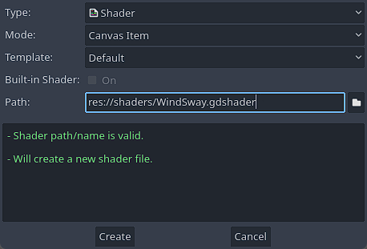

Agar terlihat menarik dan hidup pada sebuah game tentunya kita perlu membuat interaksi karakter ke objek lingkungan sekitar, salah satunya rumput atau dedaunan. Ditutorial kali ini kita akan membuatnya dengan cara sederhana tetapi dengan hasil yang bagus.
Buka Project Template, kemudian buka Shader Editor (berada dipanel bawah).
Klik File -> New Shader.
Setelah popup Create Shader muncul, arahkan Path ke res://shaders/ dan simpan dengan nama WindSway.gdshader atau bebas sesuai keingann teman-teman.

Sekarang kita perlu membuat salinan shader dari link 2D Wind Sway, open link itu kemudian copy paste kode shadernya ke file shader yang sudah kita buat sebelumnya.
Kita perlu mengedit shader tesebut, dengan menambahkan variable dan statement yang kita butuhkan untuk membuat texture menjadi terlihat miring, nanti kita gunakan untuk membuat rumput bergoyang saat player menyentuhnya.
Contoh bentuk texture menjadi miring (skew)
Kita buat variabel baru dengan nama skew.
uniformfloatskew:hint_range(-500.0,500.0)=0;
Kemudian kita tambahkan statement berikut pada fungsi vertex
Kita simpan file shadernya dengan cara Klik File -> Save File
Sekarang saatnya menerapkan shader yang sudah kita buat dan membuat script untuk node Grass.
Menerapkan shader:
Open node Grass lalu Klik node Sprite2d.
Tambahkan ShaderMaterial pada node Sprite2d
Klik Resource kemudian centang properti Local To Scene pada ShaderMaterial.
ShaderMaterial termasuk type data Resource karena itu semua data didalamnya akan dibagikan kesemua instance secara default, jadi untuk membuatnya unik disetiap instance kita perlu mencetang properti Local To Scene
Pada properti ShaderMaterial tambahkan shader yang sudah kita buat sebelumnya, dengan cara drag drop file shader ke properti Shader.
Kita sudah mempunyai shader yang dibutuhkan untuk membuat texture menjadi miring, kalian bisa bereksperimen dengan mengubah-ubah nilai parameter pada shader tersebut.
Cobalah untuk mengubah parameter Skew, menjadi 300 atau -300, nanti akan terlihat bentuk texture menjadi agak condong ke kanan atau kiri.
Menerapkan Script:
Klik icon script pada node Grass, kemudian pada fungsi _ready tambahkan potongan kode berikut: